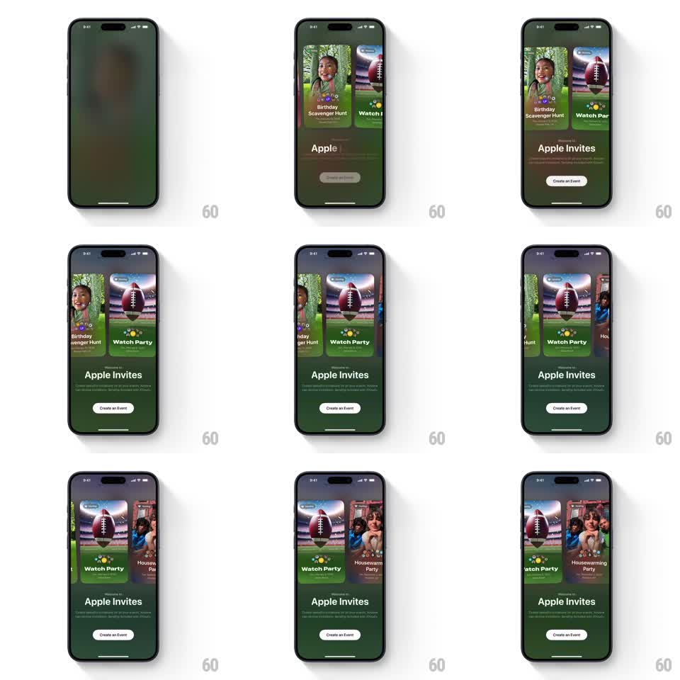

Media
Frame-by-frame

Rebuild this animation 1:1: Apple Invites' welcome screen - event template cards fan in from the top and settle into a self-drifting tilted carousel while the background hue shifts with each card.

Rebuild this animation 1:1: Apple Invites' welcome screen - event template cards fan in from the top and settle into a self-drifting tilted carousel while the background hue shifts with each card. ## Integration Integration: stack-agnostic spec - springs given as stiffness/damping, timed motions as duration + curve; map every value to your framework and animation library of choice. ## Scene Full-bleed tinted background (deep green shifting toward blue/purple). Center-top: a carousel of tall rounded event cards (Birthday Scavenger Hunt, Watch Party, Housewarming Party). Lower third: "Welcome to Apple Invites" title, subcopy, white Create an Event pill. ## Motion spec Pattern: carousel fan-in + continuous drift, ~1.5s intro. - Cards drop in from above in sequence (spring ~280/18, 120ms stagger), fanning left and right of center at slight rotations (+-6deg). - The carousel then drifts: the front card slides aside as the next card rotates into center, straightening as it arrives (spring ~200/20) - a gentle auto-advance roughly every 2s, also swipeable. - Side cards sit lower, smaller (scale ~0.85) and tilted away from center, like a hand of cards. - The background gradient crossfades its hue with each center-card change (800ms), sampling the card's artwork. - Title and button stay fixed; a soft shadow under the cards anchors them to the background. ## Calibration - The center card is always perfectly upright; tilt belongs only to side cards. - Hue shifts track the card change, never the clock - background and card are one system. ## Reduced motion Cards fade in fanned, then advance by crossfade; background still shifts. ## Don't miss - Cards enter from above, not from the sides - the drop-in is the intro's character. - Side cards peek far enough that their artwork reads; slivers read as decoration.